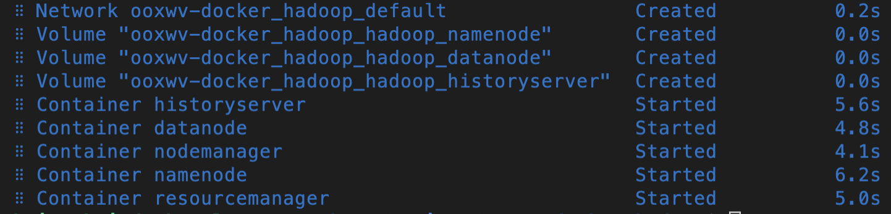

Tweet and share your achievement!
Tweet and share your achievement!
A Hadoop cluster is a collection of computers, known as nodes, that are networked together to perform parallel computations on big data sets. The Name node is the master node of the Hadoop Distributed File System (HDFS). It maintains the meta data of the files in the RAM for quick access. An actual Hadoop Cluster setup involves extensives resources which are not within the scope of this lab. In this lab, you will use dockerized hadoop to create a Hadoop Cluster which will have:
awk
git clone https://github.com/ibm-developer-skills-network/ooxwv-docker_hadoop.git
bash
cd ooxwv-docker_hadoop
ebnf
docker-compose up -d
Compose is a tool for defining and running multi-container Docker applications. It uses the YAML file to configure the serives and enables us to create and start all the services from just one configurtation file.
You will see that all the five containers are created and started.

awk
docker exec -it namenode /bin/bash
As you have learnt in the videos and reading thus far in the course, a Hadoop environment is configured by editing a set of configuration files:
hadoop-env.sh Serves as a master file to configure YARN, HDFS, MapReduce, and Hadoop-related project settings.
core-site.xml Defines HDFS and Hadoop core properties
hdfs-site.xml Governs the location for storing node metadata, fsimage file and log file.
mapred-site-xml Lists the parameters for MapReduce configuration.
yarn-site.xml Defines settings relevant to YARN. It contains configurations for the Node Manager, Resource Manager, Containers, and Application Master.
For the docker image, these xml files have been configured already. You can see these in the directory /opt/hadoop-3.2.1/etc/hadoop/ by running
awk
ls /opt/hadoop-3.2.1/etc/hadoop/*.xml
user/root/input.
awk
hdfs dfs -mkdir -p /user/root/input
awk
hdfs dfs -put $HADOOP_HOME/etc/hadoop/*.xml /user/root/input
data.txt file in the current directory.
awk
curl https://raw.githubusercontent.com/ibm-developer-skills-network/ooxwv-docker_hadoop/master/SampleMapReduce.txt --output data.txt
data.txt file into /user/root.
awk
hdfs dfs -put data.txt /user/root/
awk
hdfs dfs -cat /user/root/data.txt
9870 and click on ok to connect.Utilities -> Broswe the file system to browse the files.user then root.Notice that the block size is 128 MB though the file size is actually much smaller. This is because the default block size used by HDFS is 128 MB.
You can click on the file to check the file into. It gives you information about the file in terms of number of bytes, block id etc.,
Tweet and share your achievement!
Lavanya T S
| Date | Version | Changed by | Change Description |
|---|---|---|---|
| 18-01-2022 | 1.0 | Lavanya | Created lab instructions for Hadoop Cluster |